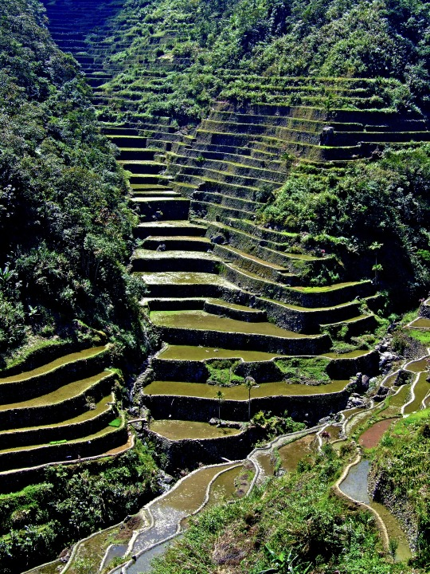

Banaue Rice Terraces

The Rice Terraces of the Philippine Cordilleras is an outstanding example of an evolved, living cultural landscape that can be traced as far back as two millennia ago in the pre-colonial Philippines. The terraces are located in the remote areas of the Philippine Cordillera mountain range on the northern island of Luzon, Philippine archipelago. While the historic terraces cover an extensive area, the inscribed property consists of five clusters of the most intact and impressive terraces, located in four municipalities. They are all the product of the Ifugao ethnic group, a minority community that has occupied these mountains for thousands of years.
The five inscribed clusters are; the Nagacadan terrace cluster in the municipality of Kiangan, a rice terrace cluster manifested in two distinct ascending rows of terraces bisected by a river; the Hungduan terrace cluster that uniquely emerges into a spider web; the central Mayoyao terrace cluster which is characterized by terraces interspersed with traditional farmers’ bale (houses) and alang (granaries); the Bangaan terrace cluster in the municipality of Banaue that backdrops a typical Ifugao traditional village; and the Batad terrace cluster of the municipality of Banaue that is nestled in amphitheatre-like semi-circular terraces with a village at its base.
The Ifugao Rice Terraces epitomize the absolute blending of the physical, socio-cultural, economic, religious, and political environment. Indeed, it is a living cultural landscape of unparalleled beauty.
The Ifugao Rice Terraces are the priceless contribution of Philippine ancestors to humanity. Built 2000 years ago and passed on from generation to generation, the Ifugao Rice Terraces represent an enduring illustration of an ancient civilization that surpassed various challenges and setbacks posed by modernization.
Reaching a higher altitude and being built on steeper slopes than many other terraces, the Ifugao complex of stone or mud walls and the careful carving of the natural contours of hills and mountains to make terraced pond fields, coupled with the development of intricate irrigation systems, harvesting water from the forests of the mountain tops, and an elaborate farming system, reflect a mastery of engineering that is appreciated to the present.
The terraces illustrate a persistence of cultural traditions and remarkable continuity and endurance, since archaeological evidence reveals that this technique has been in use in the region for 2000 years virtually unchanged. They offer many lessons for application in similar environments elsewhere.
The maintenance of the living rice terraces reflects a primarily cooperative approach of the whole community which is based on detailed knowledge of the rich diversity of biological resources existing in the Ifugao agro-ecosystem, a finely tuned annual system respecting lunar cycles, zoning and planning, extensive soil conservation, mastery of a most complex pest control regime based on the processing of a variety of herbs, accompanied by religious rituals.